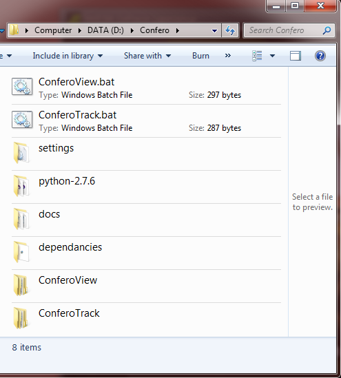

This section describes how to install the Confero Track or Confero View application on computers that have not previously had the Confero software installed.
For instruction on how to start using the Confero software on a computer that already has been setup to use one of the Confero Applications, please see the Getting Started section of the manual.
Note
Before proceeding with this section, please ensure that the Hardware and Software Requirements section of the user manual has been read. It is critical that the computers being used meet the hardware requirements for each application, and that the 3rd party software needed for each has also been downloaded.
The installation and setup of Confero Track and Confero View are reviewed separately, since normally only one of the two applications is setup on a specific computer.
An archived file, containing a folder called Confero, contains all the software needed to run the Confero Track or View applications. The contents of this archive file is referred to as the Confero Software Distribution.
The contents of the Confero software distribution is as follows
ConferoView.bat: The file used to launch the Confero View Application.
ConferoTrack.bat: The file used to launch the Confero Track Application.
settings: General settings folder for the Python environment used by Confero.
python-2.7.6: The python 2.7 distribution used by Confero.
docs: The folder containing the Confero User Manual you are currently reading.
dependancies: A folder containing some of the 3rd party software installers required by one or both of the Confero Applications. These files are referenced later in this section of the document.
Note
All steps of the Confero View installation are to be performed on the computer that will be used by the experimenter for real-time monitoring and control of the Confero Track application.
Note
A copy of the installer can be found in the CONFERO_DISTRO_ROOT/dependancies/Bonjour. Based on whether the OS being used is 32bit or 64bit, install the correct version of Bonjour.
When starting, Confero View reads some configuration settings from the CONFERO_VIEW_ROOT\settings\app_config.yaml file. Most of these settings do not need to be changed to simply test that the software is working. However one setting must be changed in order for Confero View to function without invalid data being collected.
Note
For full details on Confero View configuration options, see the Confero Configuration section of the manual.
The screen_capture: screen_resolution setting must be updated to match the screen resolution of the Confero Track computer monitor being used for data recording. For example, the following shows how to indicate that the Confero Track screen resolution being used is 1920 by 1080 pixels.
screen_capture:
screen_index: 0
screen_resolution: [1920, 1080]
Warning
If the screen_capture: screen_resolution setting is incorrect, the software will generate bad data and /or not function correctly.
To launch the Confero View application, double click on the CONFERO_DISTRO_ROOT\ConferoView.bat file.
By default, the Confero View Web UI should open in a tab of your Chrome browser. If it does not, note the URL provided for the application and enter it manually into a Chrome tab and press enter.
Note
All steps of the Confero Track installation are to be performed on the computer that will be used by the participant during data collection.
Note
A copy of the installer can be found in the CONFERO_DISTRO_ROOT/dependancies/Bonjour. Based on whether the OS being used is 32bit or 64bit, install the correct version of Bonjour.
Note
A copy of the Screen Capture Recorder installer can be found in the CONFERO_DISTRO_ROOT/dependancies/ folder, with a file name like Setup Screen Capturer Recorder vx.xx.xx
Note
By default, the Screen Capture Recorder software is configured to capture the full area of the Confero Track primary display. This is generally the desired configuration of the screen capturing software, so no extra configuration is needed.
Warning
However if your setup requires non-default settings for the Screen Capture Recorder software, run the configuration utility provided with the Screen Capture Recorder software.
When starting, Confero Track reads some configuration settings from the CONFERO_TRACK_ROOT\settings\app_config.yaml file. Most of these settings do not need to be changed to simply test that the software is working. However, two settings must be changed in order for Confero Track to function without invalid data being collected.
Note
For full details on Confero View configuration options, see the Confero Configuration section of the manual.
The screen_capture: screen_resolution setting must be updated to match the screen resolution being used for data recording. For example, the following shows how to indicate that a screen resolution of 1920 by 1080 pixels is used during data recording.
screen_capture:
screen_index: 0
screen_resolution: [1920, 1080]
Warning
If the screen_capture: screen_resolution setting is incorrect, the software will generate bad data and /or not function correctly.
Additionally, the iohub: config setting must be updated based on the eye tracker model being used during data recording. The app_config.yaml file includes a line that can be used to specify any one of the supported eye tracker devices. Only one of the provided values for this setting can be active. The active selection will not start with a # symbol. The other, inactive, option lines will start with a # symbol.
For example, the following excerpt from the config file shows a setup that is using the Tobii eye tracking system during data collection.
ioHub:
config: ..\..\settings\iohub_config_tobii.yaml
#config: ..\..\settings\iohub_config_eyelink.yaml
To use an eyelink eye tracker instead, the section of the config file would look like the following.
ioHub:
#config: ..\..\settings\iohub_config_tobii.yaml
config: ..\..\settings\iohub_config_eyelink.yaml
Warning
If the iohub: config setting is incorrect, the Confero Track software will fail to run correctly when started.
To launch the Confero Track application, double click on the CONFERO_DISTRO_ROOT\ConferoTrack.bat file.
Warning
Ensure that Confero View software is already running on the other computer before starting the Confero Track software. Otherwise the Confero Track application may exit because it could not connect to the Confero View application before timing out.
The Confero Track application does not have a GUI interface. A command prompt window will appear and text should be printed indicating that the Confero Track application found, and connected to, the Confer View application running on the other computer.
The only hardware related setup required for Confero is the connection of both the Confero View and Confero Track applications to the same LAN network using a wired 100/1000 network port.
The setup of the eye tracking hardware that will be used to record eye position data during data collection is beyond the scope of this document. Please refer to the eye tracker installation and setup materials for information in this area.